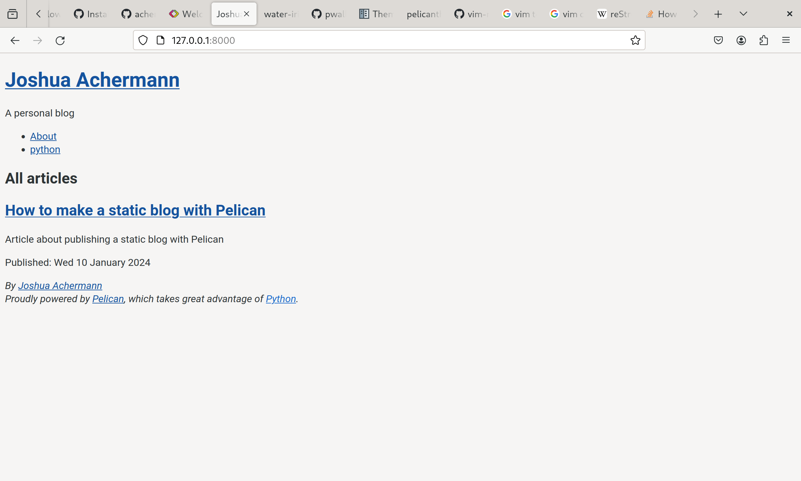

How to make a static site with Pelican
Posted by Joshua Achermann in python
Setup
Following the document to install pelican was straightforward.
In order to install pelican without disturbing the python installation provided by the system packages I made use of virtualenv. Once I have my virtualenv set up I am free to install any packages that I need through pip inside that virtual environment without disrupting my system. The essentials of virtualenvs are explained well here https://pycon.switowski.com/02-packages/virtualenv/.
Installing pelican did not pose any problems nor did initialising the project for my blog.
Theming
Pelican supports theming from a community managed selection of themes, there is a live preview available at https://pelicanthemes.com/. The docs describe the tool used to install themes for pelican was installed with the pip package and it is called pelican-themes. I cloned the repository of the community managed themes and browsed the preview website for a theme that I wanted to use on my blog. I first settled on 'water-iris', what won me over was the ASCII art for the title and the icons for the social links.
Troubleshooting Theming
After I had installed the 'water-iris' theme, I wanted to run the live preview with this theme to test it out. There is a settings file in the project root called 'pelicanconf.py' which includes a setting of which theme to apply to the published blog. One of the options during the project initialisation was to include a Makefile and there is a 'make devserver' target provided that enables auto reload on file changes within the blog project. Once the site had started serving, I opened my browser to see this:
Clearly, there was something wrong with the application of the theme to my blog. I got a bit stuck at this point and thought maybe I had done something wrong in the configuration of the pelican settings or project directory structure. While I was exploring possibilities and troubleshooting the issue, I eventually examined the pelican-themes repo I had cloned and found out that the folder was empty. That would definitely explain this strange behaviour, but why was there nothing in this directory? When I looked again at the
GitHub repo for the pelican-themes repo I realized that the water-iris theme was included as a git submodule. When I had cloned the repository, I had forgotten to add the flags that would recursively clone all the submodules contained within. Running git submodule update --init --recursive in the pelican-themes working directory and then reinstalling the theme resolved this issue.
Troubleshooting Theming Again!
Now that I had theming working on my blog, I wanted to change the theme especially the title ASCII art as I wanted it to say my name. pelican-themes supports installing the theme folder as a symbolic link instead of a copy which facilitates theme development. I used the command pelican-themes -s ../pelican-themes/water-iris/ --verbose to install the theme as a symbolic link so I could make changes to the theme. The command completed successfully so I reran the devserver
make target. I got this perplexing error Exception: Could not find the theme water-iris and indeed if I listed the installed themes with pelican-themes -l the 'water-iris' theme was absent as well.
So I started troubleshooting again, I was suspicious that the theme was not listed at all despite the others being listed so I examined the symlink created by the tool (the --verbose flag came in handy). I ran file on the symlink and got this output in response.
/home/jachermann/.pyenv/versions/pelican/lib/python3.11/site-packages/pelican/themes/water-iris: broken symbolic link to ../pelican-themes/water-iris/
The issue was caused by the relative path I passed into the tool and it is resolved from the location of the created symlink rather than from my working directory, this is a known issue with pelican-themes but the pull request to fix this issue was closed without being merged. Either this pull request should be reopened or the argument documentation should be updated to highlight that the path passed in must the absolute path, additionally it would be great to update the list option to display broken symbolic links rather than leaving them absent. Passing in the absolute path of the 'water-iris' theme folder when using the -s option with the pelican-themes tool resolved this issue.
Awesome ASCII art
I was inspired to investigate generating an ASCII art title for my blog and found pyfiglet which is a python port of the figlet terminal program which can generate ASCII art. I installed pyfiglet into the virtualenv I am using to install all dependencies required for my blog. I wanted to get a sample of every type of font that is provided by the package by default, fortunately as Python as a very dynamic programming language, it is simple to investigate the imported module and find the list of fonts.
jachermann@localhost[my_blog_source]> python
Python 3.11.7 (main, Jan 8 2024, 18:44:53) [GCC 13.2.1 20231130 [revision 741743c028dc00f27b9c8b1d5211c1f602f2fddd]] on linux
Type "help", "copyright", "credits" or "license" for more information.
>>> import pyfiglet
>>> dir(pyfiglet)
['COLOR_CODES', 'CharNotPrinted', 'DEFAULT_FONT', 'Figlet', 'FigletBuilder', 'FigletError', 'FigletFont', 'FigletProduct', 'FigletRenderingEngine', 'FigletStr
ing', 'FontError', 'FontNotFound', 'InvalidColor', 'OptionParser', 'RESET_COLORS', 'SHARED_DIRECTORY', '__author__', '__builtins__', '__cached__', '__copyrigh
t__', '__doc__', '__file__', '__loader__', '__name__', '__package__', '__path__', '__spec__', '__version__', 'color_to_ansi', 'figlet_format', 'importlib', 'i
tertools', 'main', 'os', 'parse_color', 'pathlib', 'print_figlet', 'print_function', 're', 'shutil', 'sys', 'unicode_literals', 'unicode_string', 'version', '
zipfile']
>>> f = pyfiglet.Figlet()
>>> dir(f)
['Font', '__class__', '__delattr__', '__dict__', '__dir__', '__doc__', '__eq__', '__format__', '__ge__', '__getattribute__', '__getstate__', '__gt__', '__hash
__', '__init__', '__init_subclass__', '__le__', '__lt__', '__module__', '__ne__', '__new__', '__reduce__', '__reduce_ex__', '__repr__', '__setattr__', '__size
of__', '__str__', '__subclasshook__', '__weakref__', '_direction', '_justify', 'direction', 'engine', 'font', 'getDirection', 'getFonts', 'getJustify', 'justi
fy', 'renderText', 'setFont', 'width']
>>> fonts = f.getFonts()
>>> len(fonts)
549
Once we have the list of fonts, it is trivial to generate a text file listing each font and sample text in that font.
with open('figlets.txt', 'w') as figlets:
for font in fonts:
figlets.write(font)
figlets.write('\n')
tmpf = pyfiglet.Figlet(font=font)
figlets.write(tmpf.renderText('Joshua'))
figlets.write('\n')
Here is a sample from the file 'figlets.txt'.
arrows
>=>
>=> >=>
>=> >=> >===> >=> >=> >=> >=> >=>
>=> >=> >=> >=> >=>>=> >=> >=> >=> >=>
>=> >=> >=> >==> >=> >=> >=> >=> >=> >=>
>> >=> >=> >=> >=> >> >=> >=> >=> >=> >=>
>===> >=> >=> >=> >=> >=> >==>=> >==>>>==>
asc_____
#
#
# ####### ####### # # # # #######
## # # # # # # # # #
# ## # # ####### ####### # # #######
# ## # # # # # # # # #
####### ####### ####### # # ####### # #
ascii___
## ##### ##### ## ## ## ## ##
## ## ## ## ## ## ## ## ####
### ## ## # ## ## ## ## ## ##
## ## ## ##### ####### ## ## ## ##
## ## ## ## ## ## ## ## ######
## ## ## ## ## ## ## ## ## ## ## ##
## ## ##### ##### ## ## ##### ## ##
####
I went with the font ansi-shadow.
██╗ ██████╗ ███████╗██╗ ██╗██╗ ██╗ █████╗
██║██╔═══██╗██╔════╝██║ ██║██║ ██║██╔══██╗
██║██║ ██║███████╗███████║██║ ██║███████║
██ ██║██║ ██║╚════██║██╔══██║██║ ██║██╔══██║
╚█████╔╝╚██████╔╝███████║██║ ██║╚██████╔╝██║ ██║
╚════╝ ╚═════╝ ╚══════╝╚═╝ ╚═╝ ╚═════╝ ╚═╝ ╚═╝
Adding my custom title
I have been composing this first post as I have established this blog, in the end, I decided to opt for a different theme then the one I spent so long diagnosing.
Once I had selected my choice of font for the title, I had to make changes to the theme to add it to the site header. This is because the blog content is only responsible for the static content of posts and pages rather than the look of the site itself. I moved the theme folder I had chosen into my blog source repository and installed it via symbolic link with pelican-themes. Then I could edit the HTML templates provided by the theme to add my custom title and keep my changes in version control.
Jinja templating is used to pass parameters from the blog content to the theme, I wanted to see if I could add my bespoke parameter for passing the title word art I had selected. Configuration used by pelican is set in 'pelicanconf.py' and that includes configuration for the theme as well. It is just a python file so I added the follow code alongside the generated configuration. Here is the relevant snippet:
from pyfiglet import Figlet
figlet = Figlet(font='ansi_shadow')
# custom settings are prefaced with CUSTOM_
AUTHOR = 'Joshua Achermann'
SITENAME = 'Joshua Achermann'
CUSTOM_TITLE = figlet.renderText(SITENAME)
This allows me to use the value in the template for the title , this theme has it in an include called 'jumbotron.html'. The file is small enough to include in full. I added a condition that checks for the presence of my custom parameter 'CUSTOM_TITLE' and includes a pre formatted section to display it. If the custom parameter is not present, it falls back to its original behaviour of including the site name variable directly.
<div class="jumbotron" id="overview">
<div class="container">
{% if CUSTOM_TITLE %}
<pre aria-hidden="true">{{ CUSTOM_TITLE }}</pre>
{% else %}
{{ SITENAME }}
{% endif %}
{% if SITESUBTITLE %}
<p class="lead">{{ SITESUBTITLE }}</p>
{% endif %}
</div>
</div>
Creating posts
Pelican supports markup languages reStructedText and Markdown for writing blog articles, others may be supported through plugins but I wanted to stick to the well trodden paths so I would choose between these two. I had used Markdown before (many README files are composed in Markdown) and liked it quite a lot, but I decided to write my blog entries in reStructedText (rst) in order to learn it properly as it is used extensively in Python documentation. This very post was crafted in a rst file (very meta I am aware). All blog content including static resources are stored in a subfolder called 'content', itself containing other subfolders such as 'images' or 'pages'. This directory structure can be changed but 'pelicanconf.py' contains settings that need to be updated to reflect these changes. In my setup, there is a content subfolder called 'posts' which will contain all the blog article rst files.
Publishing to GitHub Pages
I followed the instructions on this page https://pages.github.com/ to create a repo for my GitHub Page and then followed the instructions in the publishing a project site to GitHub Pages from a Branch to publish to it.
The first time you are going to publish you need to enable the GitHub Page setting in the repository settings as described here.